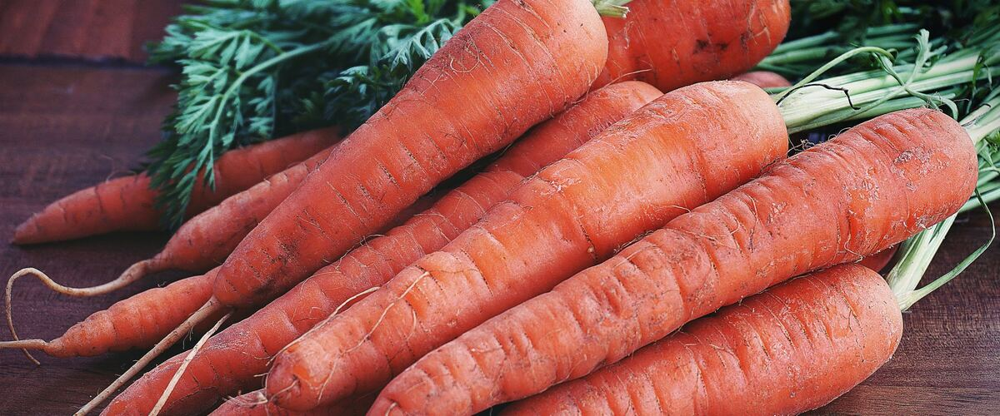

When to plant carrots in Salem, OR
Plant carrots from seed, directly in the garden in Salem, Mar 15 – May 10. For a fall harvest, plant again Jul 23 – Aug 6.
- Difficulty
- Moderate
- Sun
- Full sun
- Spacing
- Thin to 2 inches apart
- Planting depth
- ¼ inch deep
- Frost
- Handles light frost
- First harvest
- About 70 days after planting
Why these dates
Salem's typical last spring frost is April 3. As a cool-season crop that handles light frost, this crop doesn't need to wait for that date. In the west-side valleys, though, the soil usually isn't ready to work until about March 15.
West-side valleys. The Willamette Valley, Puget Sound and southern Oregon valleys. Long frost-free seasons, but soil stays cold and wet into May, so warm crops wait for warm soil, not just the last frost.
How to grow carrots in Salem
- Prepare the bed: loosen the soil and mix in an inch or two of compost.
- Plant seeds Mar 15 – May 10, ¼ inch deep, Thin to 2 inches apart.
- Keep the soil evenly moist until sprouts appear, which can take one to three weeks in cool soil.
- Plant again Jul 23 – Aug 6 for a fall harvest.
- Harvest: Pull when the shoulders are about ¾ inch across. Fall carrots sweeten after a light frost.
Key numbers
- 7–21Days to sprout
- 40–45°F minSoil to sprout
- 2 inchesThin to
- 6.0–6.8Soil pH
- Mid-April–June, Aug–SeptRust fly flights
- ¾-inch shouldersPull at
How it works
The plant biology behind the advice above, in plain language.
Getting carrots to come up
Carrot seeds are slow, often taking one to three weeks to sprout, and they need the soil surface to stay moist the whole time. They'll sprout in soil as cool as 40 to 45°F, but come up much faster in warmer soil. In the Northwest, the common failure is a crust: rain or watering packs the surface into a crust the tiny seedlings can't push through.
Cover the seeds with a quarter inch of fine compost or vermiculite instead of garden soil, water gently every day or two, and lay a board or burlap over the row until the first seedlings appear. Then remove it right away.
Straight roots
Carrots fork and twist when the taproot hits rocks, clods or hard soil, or when the tip is damaged. Grow them in deep, loose, stone-free soil or a raised bed, and avoid fresh manure. Don't transplant carrots, since damage to the taproot causes forking. Thin seedlings to about 2 inches apart; crowded carrots stay small and tangled.
Flavor, sweetness and frost
Carrots develop their best color and sweetness at about 60 to 70°F. Heat and drought increase the compounds that make carrots taste bitter or soapy. Cool fall weather and light frost make them sweeter as the roots store more sugar. That's why fall carrots taste so good here.
Carrot rust fly
The carrot rust fly is the main carrot pest in the Northwest. The adult is a small fly; its larvae tunnel through roots, leaving rusty brown trails. There are two or three generations a year: the first flies appear from about mid-April to June and a second wave in August and September.
Insect netting or row cover, laid over the bed from sowing until harvest and sealed at the edges, is the most reliable defense. Sowing after the first generation, in early June, also avoids much of the damage. Move carrots to a new bed each year.
Water and soil
Carrots grow best in sandy or loamy soil with a pH of about 6.0 to 6.8. Water evenly. A heavy soak after a dry spell can split the roots. Keep the shoulders covered with soil so they don't turn green in the sun.
Harvest and storage
Pull carrots when the shoulders are about ¾ inch across. Cut the tops off right away, since leaves draw moisture from the root. In the fridge, carrots keep for weeks; in a cold, humid spot near 32°F, they last for months. West of the Cascades you can also leave fall carrots in the ground under a thick mulch and dig them through winter, as long as voles and rust fly aren't a problem.
Common questions
When is the last frost in Salem, OR?
Typically April 3. In 9 years out of 10, frost is over by April 27. These are 1991–2020 NOAA climate normals for Salem McNary Field.
Is it too late to plant carrots in Salem?
The spring planting window runs through May 10. If you miss it, plant again for fall from July 23 to August 6.
How long until I can harvest carrots?
About 70 days after planting. Pull when the shoulders are about ¾ inch across. Fall carrots sweeten after a light frost.
Why are my carrots forked?
The taproot hit something, like rocks, clods or compacted soil, or the tip was damaged. Grow carrots in deep, loose, stone-free soil, skip fresh manure, and sow them directly rather than transplanting.
Why won't my carrot seeds come up?
Usually the soil surface dried out or formed a crust. Cover seeds with fine compost or vermiculite, keep the surface moist daily, and lay a board or burlap over the row until seedlings appear. Be patient; they can take up to three weeks.
Can I leave carrots in the ground over winter?
West of the Cascades, often yes. Cover the bed with a thick layer of straw or leaves and dig as needed. In colder areas, or where voles or rust flies are a problem, harvest and store them in the fridge or a cold, humid spot instead.
Also plant in Salem around the same time
Planting dates for carrots in nearby areas
- Portland, OR Mar 15 – May 10
- Gresham, OR Mar 15 – May 10
- Wilsonville and Canby, OR Mar 15 – May 10
- Eugene, OR Mar 15 – May 10
- Roseburg, OR Mar 15 – May 10
- Medford, OR Mar 15 – May 10